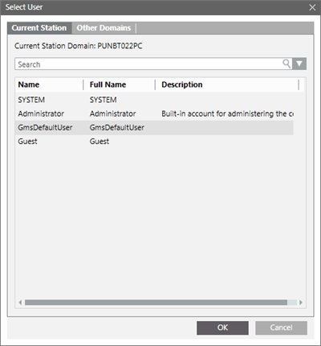
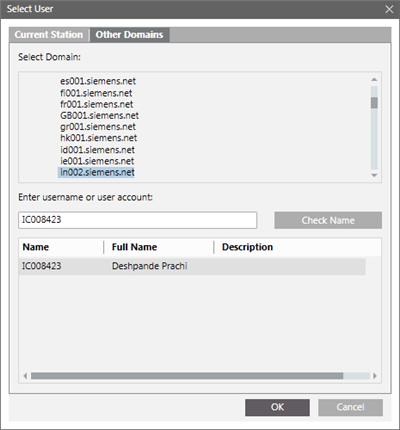

Select User Dialog Box
The Select User dialog box allows you to select a Windows user account either from local computer (from the Current Station tab) or from accessible networks (from the Other Domains tab).
The Select User dialog box can be launched when you click Browse for selecting a user.

The Current Station tab consists in the following elements.
Current Station Tab Fields | |
Name | Description |
Current Station Domain | Select from the list of available local users. |
Search | Enter the name of a user to look for. |

The Other Domains tab consists of the following elements.
Other Domains Tab Fields | |
Name | Description |
Domains Tree View | Displays the tree of the available network domains. You can select the domain where the user is located. The domain can also be specified using the Check Name textbox, that is, domainname\username. If you want to select a user from a sub-domain of a domain, and as the sub-domain in not visible in the domain tree currently, you must specify the user name or user account as follows: |
Check Name | If a domain is selected (in the domains tree or using the Check Name textbox), clicking this button displays the list of matching users in the Filtered Users list view. |
Filtered Users | This list contains all the users matching the search on the selected domain. |